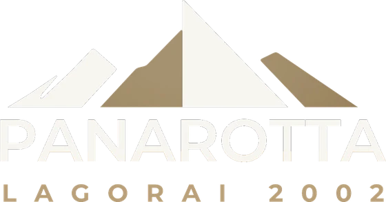

Piano editoriale social · Bozza di lavoro
Inverno
2026–2027
Cosa pubblichiamo su Instagram e Facebook, quando e come: tutti i contenuti della stagione in un unico calendario.
1 dicembre 2026 – 13 marzo 2027 · 15 settimane · Martedì Reel · Giovedì Carosello · Sabato Reel
Formato
Rubrica
Mese